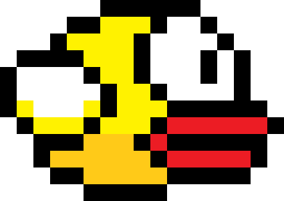

ກ່ຽວກັບ

ເກມນີ້ຖືກສ້າງຂື້ນໂດຍນັກສືກສາຈາກຫ້ອງ 2CW3
ໃນໂປຮເຈັກວິຊາ ກຣາຟຟິກ
ສອນໂດຍ ອາຈານ ລັດສະໝີ
ຫມາຍເຫດ: ພວກນ້ອງສາມຄົນໄດ້ປັບປ່ຽນຕົວເກມຂື້ນມາໃຫ່ມໂດຍການທີ່ເອົາເບື້ອງຫລັງ ຫຼື ການປັບປ່ຽນໂຄ້ດຂື້ນມາປັບປຸງໃຫ່ມນັ່ນເອງ.
ທີ່ມາ : https://github.com/CodeExplainedRepo/Original-Flappy-bird-JavaScript.git
ລາຍຊື່ນັກສືກສາ:
ທ້າວ ຄອນສະຫວັນ ວຽງໄຊ
ທ້າວ ແລ້ມໂບ ຜູຍຄຳແດງ
ທ້າວ ວາເລັນທາຍ ມະນີ
